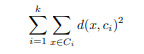

Algoritam k sredina pronalazi k klastera u podacima koje predstavlja pomoću k centroida tih klastera, od kojih se svaka dobija uprosečavanjem elemenata datog klastera. Ova pretpostavka čini algoritam primenljivim samo na podatke koji se mogu uprosečavati, poput vektora. Pod odredenim uslovima, postoje uopštenja algoritma i na drugačije vrste podataka, ali o njima neće biti reči. Polaznih k centroida se bira nasumično (mada, ako korisnik zna nešto o strukturi svojih podataka, mogu biti i unapred date), a potom se ponavljaju sledeči koraci:
Ovi koraci se izvršavaju sve dok se centroide menjaju. Kada su centroide iste u dve uzastopne iteracije, algoritam se zaustavlja.
Primer klastera koje pronalazi ovaj algoritam, dat je na slici.
Može se pokazati da ovaj algoritam minimizuje funkciju po ci , gde je d euklidsko rastojanje (ali je moguće koristiti i neko drugo). Na osnovu ovoga se može nešto zaključiti i o njegovom ponašanju. Zahvaljujući tome što je zasnovan na minimizaciji euklidskog rastojanja, algoritam teži pronalaženju klastera u obliku lopte. Kako je rastojanje kvadrirano, algoritam je osetljiv na podatke koji značajno odudaraju od ostalih. U tom slučaju će veće rastojanje uticati na ukupnu grešku neproporcionano u odnosu na ostala rastojanja i takva tačka će neprpororcionalno uticati na lokaciju centroide. Takode, ako gustina tačaka ne varira drastično i rastojanja medu klasterima nisu velika, algoritam preferira klastere sa sličnim brojem tačaka u njima, pošto bi u tom slučaju brojan klaster morao sadržati i tačke
Činjenica da algoritam k sredina minimizuje navedenu sumu navodi na njenu dalju analizu. Bitno je pitanje da li ona ima jedan globalni minimum, odnosno da li je najbolje klasterovanje u odnosu na datu sumu kvadrata rastojanja jedinstveno. Odgovor na prvo pitanje je negativan. Moguće je da postoji veći broj klasterovanja jednakog kvaliteta. Jedan primer u kojem bi to bilo i intuitivno je kada su tačke uniformno rasporedene unutar kruga i potrebno ih je podeliti na dva klastera. Rotiranje dobijenih centroida u odnosu na centar kruga daje podjednako dobro klasterovanje. Drugim rečima, u slučaju takvog skupa podataka, postoji puno globalnih, i samim tim podjednako dobrih, minimuma. Takva situacija nije zabrinjavajuća.